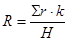
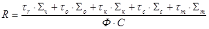

МИНИСТЕРСТВО МОНТАЖНЫХ И СПЕЦИАЛЬНЫХ
СТРОИТЕЛЬНЫХ РАБОТ СССР
|
УТВЕРЖДАЮ: зам. министра монтажных и специальных строительных работ СССР К. ЛИПОДАТ 1 октября 1973 г. |
ИНСТРУКЦИЯ
ПО ЭКСПЛУАТАЦИИ ВЕНТИЛЯЦИОННЫХ УСТРОЙСТВ
ПРОМЫШЛЕННЫХ ПРЕДПРИЯТИЙ
МИНМОНТАЖСПЕЦСТРОЯ СССР
ВСН 316-73
ММСС СССР
Москва – 1974
СОДЕРЖАНИЕ
Инструкция разработана проектным институтом Проектпромвентиляция Главпромвентиляции в развитие «Инструкции по предпусковым испытаниям, регулировке и эксплуатации вентиляционных устройств».
Инструкция предназначена для персонала промышленных предприятий Минмонтажспецстроя СССР, осуществляющих эксплуатацию вентиляционных устройств.
Правила эксплуатации вентиляционных устройств не учитывают особых условий работы на различных предприятиях министерства и должны рассматриваться как общие рекомендации. На основе этой инструкции должны быть разработаны конкретные рабочие инструкции по эксплуатации каждой вентиляционной установки с учетом ее назначения и конкретных производственных условий цехов (отделений) предприятия.
|
Минмонтажспецстрой |
Ведомственные строительные нормы |
ВСН 316-73ММСС СССР |
|
Инструкция по эксплуатации вентиляционных устройств промышленных предприятий Минмонтажспецстроя СССР |
Впервые |
1.1. Для обеспечения бесперебойной и эффективной работы вентиляционных устройств на промышленных предприятиях должна осуществляться соответствующая их эксплуатация, условиями которой предусматриваются:
необходимый штат персонала для обслуживания устройств;
периодический контроль санитарно-гигиенического состояния воздушной среды в помещениях;
в случае необходимости определение эффективности работы устройств и их наладка;
обеспечение нормального технического состояния устройств и своевременного их ремонта.
1.2. Ответственным за эффективность работы и общим состоянием вентиляционных устройств является главный инженер предприятия.
1.3. Техническое руководство и контроль за эксплуатацией, а также за своевременным и качественным ремонтом вентиляционных устройств осуществляется под руководством главного энергетика (главного механика) предприятия.
Для этих целей в отделе главного энергетика (главного механика) рекомендуется создать службу эксплуатации вентиляционных устройств
1.4. На службу эксплуатации вентиляционных устройств при главном энергетике (механике) предприятия возлагаются:
разработка рабочих инструкций по эксплуатации вентиляционных устройств для каждого обособленного производственного помещения (цеха, отделения) с учетом местных условий, специфики технологии производства и действующих противопожарных требований;
|
Внесена институтом |
Утверждена |
Срок введения |
систематический контроль за выполнением требований рабочих инструкций при эксплуатации устройств цеховой службой;
проверка соответствия фактической производительности вентиляционных установок проектным данным;
санитарно-гигиенические обследования состояния воздушной среды в производственных помещениях, проводимые химической лабораторией предприятия (см. п. 1.8) или привлекаемыми для этой цели специализированными организациями;
участие в разработке технической документации по планово-предупредительному ремонту устройств (годовых планов и графиков работ, заявок на материалы и оборудование и т.п.);
участие в разработке заданий на капитальный ремонт устройств;
технический надзор за реконструкцией действующих и монтажом новых устройств;
участие в приемке в эксплуатацию капитально отремонтированных, реконструированных и вновь смонтированных вентиляционных устройств;
разработка заданий на проектирование новых или реконструкцию существующих устройств совместно с цеховой службой эксплуатации;
составление паспортов на каждую вентиляционную установку по форме, приведенной в приложении 1.
1.5. Ответственность за эксплуатацию вентиляционных устройств на промышленных предприятиях, а также за их исправное состояние и сохранность несут начальники производственных цехов, в составе которых создается цеховая служба эксплуатации этих устройств. Состав и квалификация цеховой службы эксплуатации определяются рабочей инструкцией.
1.6. На цеховую службу эксплуатации вентиляционных устройств возлагаются:
выполнение требований рабочей инструкции по эксплуатации устройств;
письменное ведение журнала эксплуатации установок, отражающего соблюдение требований рабочей инструкции,
выполнение текущего ремонта и устранение неисправностей, возникающих в процессе эксплуатации.
1.7. Для службы эксплуатации в штатном расписании отдела главного энергетика (главного механика) следует предусмотреть:
на предприятиях при сумме ремонтных единиц вентиляционного оборудования (подсчитываемых в соответствии с приложением 2) 1250 и более - инженера по вентиляции;
на предприятиях при сумме ремонтных единиц вентиляционного оборудования 600 - 1260 - техника или мастера по вентиляции;
на предприятиях при сумме ремонтных единиц вентиляционного оборудования менее 600 - бригадира по вентиляции.
Примечание. См. Постановление ЦК КПСС и Совета Министров СССР от 5.VII-1968 г. № 517 «О мерах по дальнейшему улучшению здравоохранения и развития медицинской науки в стране» и «Положение о санитарной лаборатории на промышленном предприятии Минздрава СССР» от 26 сентября 1969 г. № 822-69.
1.9. Необходимое число дежурных слесарей по вентиляции может быть определено по формуле:
|
 |
где R - количество рабочих, необходимых для обеспечения межремонтного обслуживания (структура и продолжительность межремонтных циклов и периодов между ремонтами и осмотрами для вентиляционных установок при трех- и двухсменной работе приведены в приложении 3);
Sr - сумма ремонтных единиц обслуживаемого оборудования, определяемая по приложению 2;
k - число смен работы вентиляционного оборудования;
Н - норматив межремонтного обслуживания на одного рабочего в смену в ремонтных единицах. Эти нормативы (ориентировочные) следующие:
для цехов механосборочных, холодной обработки металлов, гаражей-стоянок автомобилей - 850 ¸ 900;
для цехов кузнечных, прессовых, прокатных, термообработки, сварочных - 650 ¸ 700;
для цехов литейных, травильных, металлопокрытий, шлифовально-заточных, окрасочных, деревообрабатывающих - 600 ¸ 650;
для цехов изготовления и обработки пластмасс и изготовления изделий из пластмасс - 500 ¸ 600;
для служебно-административных и инженерно-лабораторных зданий - 860 ¸ 900.
1.10. Необходимая численность рабочих для выполнения плановых ремонтов определяется на основании годового плана ремонта вентиляционного оборудования раздельно для частей электротехнической и собственно вентиляционного оборудования по формуле:
|
 , |
где R - необходимое количество рабочих;
Sr; So; Sк; Sc; Sм - суммарное количество ремонтных единиц для ежегодно подлежащего чистке, осмотру и ремонту оборудования при капитальном, среднем и малом ремонтах, определяемое по приложению 2;
tr; to; tк; tс; tм - нормативы времени на одну ремонтную единицу для чистки, осмотра, капитального, среднего и малого ремонтов, определяемые по приложению 4, ч;
Ф - действительный годовой фонд рабочего времени, ч;
С - коэффициент переработки норм.
1.11. В приложении 5 приведена периодичность чистки вентиляционных установок, составленная в зависимости от сложности установок и условий их работы.
2.1. Все производственные помещения (цеха, отделения) предприятия должны быть подвергнуты санитарно-гигиеническому обследованию (см. п. 1.8) для определения соответствия эффективности действующей в нем вентиляции требованиям санитарных норм.
2.2. Если вентиляция не обеспечивает требуемых по санитарным нормам условий труда, необходимы испытание вентиляционных установок и соответствующие наладочные работы.
Испытание и наладка вентиляционных установок на санитарно-гигиенический эффект могут осуществляться службой эксплуатации при главном энергетике (механике) предприятия и специализированными пусконаладочными организациями Минмонтажспецстроя СССР.
2.3. При невозможности средствами наладки обеспечить эффективность действия существующих вентиляционных установок последние должны быть перепроектированы с учетом рекомендаций наладочной организации. После монтажа вновь смонтированных установок их эффективность должна быть проверена испытаниями с выявлением соответствия условий труда в помещении действующим санитарным нормам.
2.4. Эксплуатационный режим каждой вентиляционной установки уточняется специальной рабочей инструкцией, составляемой по каждому обособленному вентилируемому помещению (цеху, отделению) промышленного предприятия.
В рабочей инструкции по эксплуатации вентиляционных установок цеха (отделения) должны быть указаны:
наименования цеха, участка и агрегата, которые обслуживает установка, и ее обозначение;
фамилия лица, ответственного за обслуживание данной установки;
расчетная температура воздуха в рабочей зоне и ее допустимые отклонения;
производительность и частота вращения вентилятора каждой установки, его тип и номер, а также тип и размеры другого оборудования установки;
время и порядок включения и выключения установок;
методы регулирования расхода и температуры приточного воздуха;
особенности ухода за отдельными установками;
плановые сроки очистки пылеулавливающих устройств, калориферов и другого оборудования установок; предельно допустимые значения их сопротивления проходящему воздуху, при достижении которых необходимо производить очистку соответствующего оборудования;
сроки и порядок определения эффективности работы установок;
указания о порядке действия обслуживающего персонала при пожаре или авариях;
перечень контрольно-измерительных приборов (термометры, анемометры, микроманометры и т.д.).
2.5. В процессе эксплуатации вентиляционных установок необходимо периодически проверять соответствие параметров воздуха в рабочей зоне помещений санитарным нормам.
2.6. При изменении технологического процесса, а также при перестановке технологического оборудования, сопровождающихся выделением производственных вредностей, вентиляционные установки должны быть приведены в соответствие с новыми условиями.
2.7. Двери камер, в которых установлено вентиляционное оборудование, должны плотно закрываться и запираться (как при работе вентиляционных установок, так и после их выключения).
Помимо обслуживающего персонала никто не должен допускаться в камеры. Камеры должны быть обеспечены освещением.
2.8. Внешние поверхности вентиляторов, электродвигателей, фильтров и другого вентиляционного оборудования, а также контрольно-измерительных приборов, воздухоприемных и воздуховыпускных устройств должны систематически очищаться от пыли.
2.9. Каждой вентиляционной установке присваиваются условное сокращенное обозначение и порядковый номер.
Рекомендуются следующие общепринятые сокращенные обозначения и нумерация установок:
ПУ-1 - приточная установка 1;
ВУ-4 - вытяжная установка 4;
ОУ-3 - обеспыливающая установка 3,
ВОУ-6 - воздушно-отопительная установка 6,
ВТЗ-5 - воздушно-тепловая завеса 5;
ТЗ-2 - тепловая завеса 2;
ПТУ-3 - пневмотранспортная установка 3.
Сокращенные обозначения и порядковые номера вентиляционных установок должны быть нанесены яркой несмываемой краской на кожух вентилятора.
Для удобства эксплуатации все установки каждого производственного корпуса с одинаковым сокращенным обозначением должны иметь единую порядковую нумерацию (при таком порядке в каждом корпусе окажется только одна установка ВУ-1 или ПУ-1 и т.д.).
2.10. В каждом производственном цехе должен быть журнал обслуживания вентиляционных установок, в котором фиксируются:
неисправности установок;
время включения и выключения установок, все случаи прекращения работы установок в рабочее время в связи с ремонтом, а также вследствие аварий, отсутствия электроэнергии, теплоносителя и т.д.;
устранение неисправностей и возобновление работы установок;
фамилии и подписи дежурных слесарей и электриков, дни и часы дежурств.
2.11. На каждую вентиляционную установку должны быть заведены паспорт по форме, приведенной в приложении 1, и ремонтная карта.
2.12. Паспорт вентиляционной установки составляется по данным ее испытаний. После капитального ремонта установки в соответствующие графы паспорта следует вносить необходимые изменения и дополнения (например, по замене вентиляционного оборудования, повышению производительности вентилятора путем увеличения частоты вращения его колеса и т.д.).
2.13. В ремонтной карте вентиляционной установки указываются вид ремонта (текущий, средний, капитальный), дата начала, окончания и краткое описание ремонта, а также оценка качества выполненных ремонтных работ.
2.14. Включение приточных и общеобменных вытяжных вентиляционных установок следует производить за 10 - 15 мин до начала работы цеха (отделения), при этом сначала включаются вытяжные, а затем приточные установки.
Выключение этих установок следует производить через 10 - 20 мин после окончания работы цеха (отделения). Сначала должны выключаться приточные, а затем вытяжные установки.
Отопительно-вентиляционные установки в течение отопительного периода после окончания работы в цехе (отделении) переключаются на режим рециркуляции в соответствии с указаниями рабочей инструкции.
2.15. Местные вытяжные вентиляционные установки должны включаться за 3 - 5 мин до начала работы производственного оборудования, а выключаться через 3 - 5 мин после ее окончания.
2.16. Включение приточных установок надлежит осуществлять в такой последовательности.
|
В холодный и переходный периоды года |
В теплый период года |
|
открыть утепленный клапан. |
утепленный клапан должен быть полностью открыт. |
Удостовериться в том, что двери камер, а также люки и лазы воздуховодов плотно закрыты.
При наличии самоочищающихся фильтров включить их.
Проверить положение обводного клапана у калориферов, который должен быть:
|
полностью закрыт. |
полностью открыт. |
Проверить положение общего дросселирующего устройства установки. Оно должно соответствовать положению, зафиксированному при регулировании производительности вентилятора для каждого периода года (если изменение количества подаваемого воздуха не осуществляется соответствующим изменением частоты вращения колеса вентилятора).
|
При теплоносителе воде открыть задвижку на обратном трубопроводе |
|
|
В холодный и переходный периоды года |
В теплый период года |
|
При теплоносителе паре задвижки должны быть открыты постоянно. Проверить в соответствии с рабочей инструкцией показания термометра или манометра, установленных на трубопроводе теплоносителя к калориферной установке, а при их отсутствии - на узле управления местной системы теплопотребления. Если замеренная температура окажется значительно ниже требуемой по графику теплоснабжения, пуск вентилятора не допускается. |
При наличии оросительной камеры, работающей по адиабатическому процессу, включить форсунки.
|
Открыть утепленный клапан. |
Включить электродвигатель.
Проверить температуру воздуха, поступающего в вентилируемое помещение, по термометру, стационарно установленному в гильзе на общем воздуховоде после вентилятора.
|
В холодный и переходный периоды года |
В теплый период года |
|
В установке, где проектом предусмотрена возможность рециркуляции воздуха, регулировка температуры воздуха должна выполняться следующим образом: при перегреве - уменьшить количество рециркуляционного воздуха, одновременно увеличив количество наружного воздуха; при недогреве - увеличить количество рециркуляционного воздуха, одновременно уменьшив количество наружного воздуха. |
Примечания: 1. Для обеспечения санитарных норм не допускается уменьшение количества наружного воздуха более необходимого по расчету.
2. О значительном недогреве приточного воздуха дежурный слесарь должен немедленно сообщить своему руководителю для принятая необходимых мер.
2.17. Выключение приточных установок надлежит осуществлять в такой последовательности.
|
В холодный и переходный периоды года |
В теплый период года |
Выключить электродвигатель.
|
Закрыть утепленный клапан |
Утепленный клапан должен быть полностью открыт. |
При наличии оросительной камеры, работающей по адиабатическому процессу, выключить форсунки.
|
При теплоносителе паре задвижки на калориферах остаются открытыми. При теплоносителе воде закрыть задвижку на обратном трубопроводе. Вентили на обводной линии задвижки должны быть открыты постоянно. При выключении калориферов на длительный срок, в случае остановки цеха (отделения), ремонта или в соответствии со специальными указаниями рабочей инструкции, необходимо слить воду из калориферов. |
Калориферы должны быть выключены. |
Выключить механизмы самоочищающихся фильтров.
|
Полностью закрыть обводной клапан у калориферов. |
Обводной клапан должен быть полностью открыт. |
2.18. Выключение вытяжных установок надлежит осуществлять в такой последовательности (перед включением удостовериться в том, что двери камер, люки и лазы воздуховодов, а также дверки пылесборников пылеочистных устройств плотно закрыты):
при наличии мокрых пылеотделителей включить их, открыв вентиль на линии водопровода, и проверить сток воды от пылеочистных устройств в шламоотделитель;
проверить положение общего дросселирующего устройства установки и дросселирующих устройств, установленных за местными отсосами. Эти устройства должны находиться в положении, определенном при регулировке расхода воздуха в вентиляционной установке;
включить электродвигатель.
2.19. Выключение вытяжных установок необходимо осуществлять следующим образом: выключить электродвигатель, закрыть вентили на водопроводной линии к мокрым пылеотделителям (при их наличии).
2.20. Технологическое оборудование во взрывопожароопасных помещениях разрешается вводить в действие только после приемки в эксплуатацию вентиляционных устройств.
2.21. Запрещаются каким-либо лицам работы с вентиляционными устройствами без разрешения начальника цеха.
2.22. Проверка дежурными слесарями вентиляционных камер пожаро- и взрывоопасных производств должна выполняться не реже одного раза в смену с занесением результатов осмотра в журнал. Обнаруженные при этом недочеты, которые могут вызвать загорание или взрыв, должны быть не медленно устранены.
2.23. Камеры, пылеотделители, фильтры и воздуховоды должны периодически очищаться от органической и другой взрывопожароопасной пыли, а также от предметов, которые могут гореть.
2.24. Очистка вентиляционных установок должна производиться в установленные сроки. Время очистки должно указываться в журнале.
2.25. Хранение в помещениях вентиляционных установок любых материалов, инструментов и т.п. категорически запрещается.
2.26. Производство ремонта или работ по переоборудованию вентиляционных устройств взрывоопасных производств разрешается в нерабочие дни после очистки воздуховодов и вентиляционного оборудования от взрывоогнеопасных отложений.
2.27. Ремонт вентиляционных устройств допускается только с письменного разрешения начальника цеха или начальника смены.
2.28. Места прохода огнезадерживающих клапанов в стене должны быть тщательно и прочно заделаны (наглухо) строительным раствором. Огнезадерживающие клапаны в процессе эксплуатации должны периодически осматриваться, проверяться и очищаться от пыли и грязи. Все движущиеся части должны быть смазаны.
2.29. В случае возникновения пожара в производственном помещении вентиляционная система должна выключаться. Все шиберы и клапаны закрываются.
2.30. Подробные данные по эксплуатации вентиляционных устройств во взрыво- и пожароопасных помещениях с учетом специфики производства приводятся в рабочей инструкции.
2.31. Условия эксплуатации вентиляционных устройств, связанные с обеспечением пожарной безопасности, должны быть согласованы с пожарной инспекцией.
2.32. Обслуживающий персонал должен систематически следить за тем, чтобы:
работающие вентиляторы имели плавный и относительно бесшумный ход;
рабочие колеса вентиляторов имели правильное направление вращения: в центробежных вентиляторах по направлению разворота спирали кожухов (в центробежных электровентиляторах правильность вращения определяется по направлению вращения свободного конца вала электродвигателя), а в осевых нереверсивных вентиляторах - выпуклой кромкой лопаток вперед;
лопатки рабочих колес не имели вмятин, прогибов или разрывов;
рабочее колесо вентилятора свободно вращалось от усилия руки, при этом не имело биения или смещения на валу и не задевало за кожух;
рабочие колеса вентиляторов были хорошо отбалансированы (при правильной балансировке колесо должно останавливаться в разных положениях, не возвращаясь в исходное положение);
болты, крепящие вентиляторы к основанию, были надежно затянуты.
Для надежности эти болты должны быть закреплены контргайками.
2.33. Величина биения рабочего колеса, замеренная на внешних кромках дисков, не должна превышать:
для вентиляторов номеров от 2 до 6,3 -
1 мм в радиальном направлении,
2 мм в осевом направлении;
для вентиляторов номеров свыше 6,3 до 12,5 -
2 мм в радиальном направлении,
3 мм в осевом направлении;
для вентиляторов номеров свыше 12,5:
3,5 мм в радиальном направлении,
5 мм в осевом направлении.
Зазоры между кромкой переднего диска рабочего колеса и кромкой входного патрубка центробежного вентилятора в осевом и радиальном направлениях не должны превышать 1 % от диаметра рабочего колеса.
У осевых вентиляторов зазор между лопатками и обечайкой не должен превышать 0,5 % от диаметра рабочего колеса.
2.34. Осмотр подшипников и их смазка должны производиться:
при заливке корпуса жидким минеральным маслом - не реже одного раза в месяц;
при применении консистентных смазок - не реже одного раза в 3 - 4 месяца.
Полную смену смазки с промывкой корпуса подшипников бензином необходимо производить:
при применении жидкого масла - не реже одного раза в 6 месяцев;
при применении консистентных смазок - не реже одного раза в год.
2.35. Температура корпуса подшипников вентиляторов не должна превышать 70 °С. При превышении этой температуры подшипники необходимо осмотреть, очистить и вновь смазать.
2.36. При обнаружении коррозии или трещин подшипники необходимо заменить.
2.37. Валы вентиляторов и электродвигателей, имеющие клиноременную передачу, должны быть строго параллельны; средние линии полотен шкивов вентиляторов и электродвигателей должны совпадать.
Скольжение ремней и уменьшение вследствие этого частоты вращения рабочего колеса вентилятора по сравнению с расчетным допускается не более чем на 4 %.
2.38. Всасывающие патрубки вентиляторов, не присоединенные к воздуховодам, должны быть защищены металлическими сетками.
2.39. При появлении шума в вентиляторе (например, в результате износа подшипников, ослабления растяжек рабочего колеса, попадания посторонних предметов и др.), а также при возникновении вибрации вентиляторов необходимо выключить электродвигатель, установить причину шума, вибрации вентилятора и принять меры к срочному устранению неисправностей.
2.40. Рабочие колеса и внутренние поверхности кожухов вентиляторов необходимо систематически очищать от пылевых и иных отложений.
2.41. При быстром загрязнении вентиляторов для облегчения очистки в их кожухах должны быть сделаны люки герметическими крышками.
Сроки очистки вентиляторов устанавливаются рабочими инструкциями.
2.42. Вентиляторы, обслуживающие вентиляционные установки для удаления сильно увлажненного воздуха или с мокрой очисткой удаляемого воздуха, должны иметь дренажные устройства для удаления влаги из кожуха.
2.43. Следует периодически проверять состояние мягких вставок, виброоснований и ограждений вентиляторов, а также заземление вентиляционного оборудования и воздуховодов.
2.44. Перед пуском электродвигателя необходимо проверить исправность привода.
2.45. Корпуса электродвигателей и пускорегулирующих устройств должны быть заземлены; заземление необходимо периодически проверять.
2.46. Работающий электродвигатель немедленно отключается:
при несчастных случаях;
при сильной вибрации электродвигателя;
при выявлении неисправностей вентилятора;
при появлении дыма или огня из электродвигателя и его пускорегулирующей аппаратуры;
при чрезмерном нагреве подшипников или корпуса электродвигателя.
2.47. При обнаружении неисправности пусковых устройств (рубильников, переключателей, магнитных пускателей и др.) электродвигатель не включать до устранения обнаруженных дефектов.
2.48. При отключении тока в электросети немедленно выключить все электроустановки и, в первую очередь, имеющиеся контактные кольца и пусковые реостаты, о чем должно быть указано в рабочей инструкции.
2.49. Эксплуатация электродвигателей должна производиться в соответствии с требованиями Правил устройства электроустановок (ПУЭ).
2.50. Последовательность работ по включению и выключению калориферов, работающих на воде при остановке вентиляционной установки на длительный период.
Включение
Закрыть устройства для спуска воды в низших точках трубопровода калориферной установки;
открыть запорную арматуру на обратной линии от калориферов;
открыть воздуховыпускные устройства в верхних точках обвязки калориферов и закрыть их после появления струи воды;
открыть запорную арматуру на подающей линии к калориферам;
проверить герметичность трубопровода и арматуры;
проверить показания термометра на подающей линии к калориферам, а при отсутствии такового - термометра на узле управления местной системы теплопотребления; если замеренная температура окажется значительно ниже требуемой по графику теплоснабжения, пуск вентилятора не допускается, о чем ставится в известность главный энергетик для принятия решения.
Выключение
Закрыть запорную арматуру на подающем трубопроводе к калориферной установке;
закрыть запорную арматуру на обратном трубопроводе от калориферной установки;
открыть воздуховыпускные и спусковые устройства и спустить воду.
2.51. Последовательность работ по включению и выключению калориферов, работающих на паре давлением свыше 0,3 кгс/см2.
Включение
Закрыть основной проход конденсатоотводчика и открыть проход через обводную линию или через внутренний обводной канал;
открыть контрольный вентиль, установленный после конденсатоотводчика;
постепенно открыть вентиль на подающем паропроводе к калориферам;
после выпуска воздуха и появления пара закрыть контрольный вентиль;
открыть проход конденсата через конденсатоотводчик и закрыть обводную линию или внутренний обводной канал.
Выключение
Закрыть запорную арматуру на подающем паропроводе к калориферам;
открыть обводную линию или отводной канал конденсатоотводчика;
закрыть основной проход конденсатоотводчика;
при выключении установки на длительный период вывернуть пробку в нижней части конденсатоотводчика для спуска конденсата.
2.52. Последовательность работ по включению и выключению калориферов, работающих на паре давлением до 0,3 кгс/см2.
Включение
Открыть воздушный кран;
открыть запорную арматуру на конденсационных линиях от отдельных групп калориферов;
постепенно открыть вентили на подающем паропроводе к калориферам;
после появления пара закрыть воздушный кран.
Выключение
Закрыть запорную арматуру на подающем паропроводе к калориферам;
открыть воздушный кран;
при выключении установки на длительный период вывернуть пробку в нижней части водяного затвора (сифона).
2.53. Нормальная работа калориферов возможна при строгом соблюдении установленных параметров нагрева и объема приточного воздуха. При изменении этих параметров необходимо произвести пересчет теплопроизводительности калориферов.
2.54. Очистку калориферов от загрязнений рекомендуется производить пневматическим способом - сжатым воздухом от существующей сети трубопроводов сжатого воздуха или баллонов со сжатым воздухом.
2.55. При загрязнении оребрения калориферов плотно слежавшимися пылевыми отложениями, особенно с примесью масла, не поддающимися очистке струей сжатого воздуха, очистку рекомендуется производить гидропневматическим способом с применением специального приспособления.
2.56. Загрязнение внутренних полостей трубок калориферов и регулировочных кранов, ведущее к снижению теплопроизводительности, можно уменьшить фильтрацией горячей воды в фильтрах-грязевиках (при водяных калориферах) и очисткой пара от примесей в фильтрах с металлической сеткой с ячейками 0,8 - 1 мм, устанавливаемых на паропроводе перед запорными и регулирующими устройствами.
Установленные фильтры-грязевики необходимо систематически очищать и промывать.
2.57. Калориферные установки следует ежедневно тщательно осматривать и при обнаружении парения или подтекания в калориферах, фланцевых соединениях, арматуре или трубопроводе немедленно принять меры к устранению выявленных неплотностей.
При парении или подтекании в местах расположения съемных крышек калориферов следует сменить прокладки.
При теплоносителе паре и воде с температурой выше 100 °С применяются прокладки из паронита, при теплоносителе воде с температурой до 100 °C - из прокладочного картона толщиной 3 - 4 мм, проваренного на олифе. Перед установкой прокладки следует натереть графитом.
2.58. Прогнутые пластинки калориферов должны быть выправлены.
2.59. Необходимо систематически наблюдать за исправностью контрольно-измерительных приборов, конденсатоотводчиков и конденсационных горшков.
2.60. Воздух, скапливающийся в трубопроводах, подающих и отводящих воду от калориферных установок, следует периодически выпускать.
2.61. На неавтоматизированных приточных установках следует производить регулировку температуры приточного воздуха с помощью клапанов в зависимости от температуры наружного воздуха.
2.62. Зазоры между калориферами, а также между калориферами и строительными конструкциями камер следует заделать несгораемым материалом.
2.63. В процессе эксплуатации оросительных камер необходимо не реже одного раза в месяц:
проверять исправность работы форсунок и при необходимости прочищать их;
проверять герметичность соединений водопроводных труб;
очищать внутренние поверхности камеры и пластин сепараторов от загрязнений;
очищать сетку водяного фильтра;
проверять исправность шарового клапана и обеспечивать поддержание заданного постоянного уровня воды в поддоне;
проверять исправность осветительной арматуры;
проверять плотность притвора дверок камеры.
2.64. Последовательность работ по включению и выключению оросительной камеры.
Включение
Закрыть задвижку для спуска воды из поддона;
открыть вентиль на линии, подающей воду к шаровому клапану, и заполнить поддон водой;
включить насос, подающий воду в оросительную камеру;
отрегулировать давление воды с помощью задвижки на стороне нагнетания перед форсунками;
проверить характер распыливания воды всеми форсунками, прочистить засоренные форсунки.
Выключение
Остановить насос, закрыть вентиль на линии, подающей воду к шаровому клапану;
открыть задвижку для спуска воды из поддона в канализацию.
2.65. При эксплуатации циклонов необходимо:
следить за тем, чтобы они находились в вертикальном положении и были прочно закреплены к постаментам или опорным кронштейнам;
систематически проверять герметичность пылесборных бункеров и затворов пылеотводящих патрубков;
периодически в сроки, устанавливаемые рабочей инструкцией, в нерабочее время при выключенном вентиляторе удалять пыль, осаждающуюся в пылесборнике циклона; систематически следить за исправностью работы циклонов.
2.66. При установке новых циклонов, а также при ремонте циклонов необходимо:
убедиться, в отсутствии посторонних предметов внутри циклона и чистоте его внутренних поверхностей;
устранить имеющиеся неплотности в циклоне и пылесборнике.
2.67. При эксплуатации циклонов с водяной пленкой и скрубберов не следует допускать включение вентиляторов до пуска воды в циклоны или скрубберы.
2.68. Периодически следует проверять давление воздуха до и после очистного устройства и при увеличении его сопротивления проходящему воздуху сверх предельно допустимого, предусматриваемого рабочей инструкцией, производить очистку внутренних стенок устройства.
2.69. Систематически следить за исправностью работы устройства по количеству и окраске шлама, вытекающего из патрубка скруббера.
Систематически следить за правильностью установки форсунок (сопел), а при их засорении прочищать.
2.70. При установке новых циклонов, скрубберов и при их ремонте должны быть выполнены указания п. 2.66.
2.71. В процессе эксплуатации фильтра необходимо следить:
за исправностью рукавов и, в случае износа, заменять их запасными; снятые рукава следует направлять в ремонт;
за правильным действием встряхивающего механизма и прочностью закрепления всех его кулачков, шарниров и гаек;
за работой перекидных клапанов, отключающих секции от вентилятора при встряхивании;
за состоянием работы клапана, через который проходит в секции воздух для обратной продувки при встряхивании рукавов;
за состоянием подшипников;
за смазкой шестерен, а также роликов встряхивающих рычагов;
за работой передаточного ремня, не допуская сбегания его на край обода шкива;
за чистотой фильтра, периодически очищая его от пыли, осевшей снаружи и внутри шкафа.
Примечание. При хорошей работе встряхивающего механизма и рекомендуемой заводом-изготовителем (завод им. Воробьева, г. Горький) удельной нагрузке 150 - 180 м3/ч воздуха на 1 м2 фильтровальной ткани сопротивление фильтров должно составлять 40 50 кгс/м2. Сопротивление менее 40 кгс/м2 указывает на недогрузку фильтра или изношенность рукавов, или на наличие неплотностей в местах крепления рукавов. Сопротивление более 50 кгс/м2 указывает на перегрузку фильтра или сильную запыленность очищаемого воздуха, плохую очистку рукавов или чрезмерную плотность фильтровальной ткани.
2.72. На каждую фильтрующую установку должна быть составлена рабочая инструкция с указанием сроков очистки от пыли, режима работы механизма встряхивания и продувки рукавов воздухом.
2.73. Заправку фильтров фильтрующим материалом рекомендуется производить в такой последовательности:
снять крышки верхних и нижних лючков фильтра;
установить катушки с фильтрующим материалом на верхние подшипники, пустые катушки - на нижние подшипники и зафиксировать их рукоятки. Хвостовики осей соседних катушек должны соединяться друг с другом. Через верхние лючки концы фильтрующего материала каждой катушки прикрепить к звеньям соответствующей подвижной решетки;
включить электродвигатель узла привода;
после того как фильтрующий материал полностью перекроет сечение фильтра, выключить электродвигатель;
освободить концы фильтрующего материала от звеньев подвижной решетки, протащить материал через нижние лючки (при необходимости включая электродвигатель) и закрепить концы фильтрующего материала на пустых катушках;
фильтрующий материал закрепляется на катушках при помощи скобы, прокалывающей материал в первом витке; вторым витком скоба прижимается к катушке;
установить на секции крышки люков.
2.74. Смену фильтрующего материала следует производить в рекомендуемом выше порядке или своевременным наращиванием фильтрующего материала с новых катушек на использованный материал. Освободившиеся при этом верхние катушки необходимо переставить на нижние подшипники.
2.75. При достижении предусмотренного проектом предельного сопротивления фильтра необходимо произвести перемотку фильтрующего материала с верхнего рулона на нижний, вводя таким образом в воздушный поток чистый материал и снижая сопротивление фильтра.
2.76. Перемотка фильтрующего материала может включаться по показаниям микроманометра или при помощи системы автоматического управления фильтра с сигнализатором перепада давления (СПД).
2.77. Смазку подшипников нижнего вала и звездочек верхней оси необходимо производить не реже одного раза в два месяца.
2.78. Масло в редукторе с его промывкой керосином следует менять не реже одного раза в год. Для заливки применяется индустриальное масло по ГОСТ 1707-51.
Заливку масла необходимо производить до уровня контрольного отверстия. За уровнем масла в редукторе следует систематически наблюдать и пополнять по мере необходимости.
Периодичность пополнения маслом редуктора определяется из условий эксплуатации и фиксируется в рабочей инструкции.
2.79. Валки, между которыми натягиваются панели (непрерывные ленты из сетки), должны быть: верхние - ведущими, а нижние - свободно лежащими на сетках.
2.80. Верхние валки закрепляются в подшипниках и приводятся во вращение от электродвигателя через двухступенчатый червячный редуктор.
2.81. Первая (по ходу воздуха) панель должна иметь скорость движения в два раза большую, чем вторая.
2.82. При движении панели должны проходить через ванну, заполненную веретенным или иным, предусмотренным проектом, маслом, где они отмываются от осевшей на них пыли.
Заливка фильтра маслом может производиться через верхнее отверстие вручную или через нижний кран с помощью масляного насоса. В обоих случаях верхний уровень масла определяется нижней кромкой верхнего отверстия.
2.83. Смену масла следует производить после того, как сопротивление загрязненного фильтра увеличится на 50 % против сопротивления чистого фильтра (около 10 кгс/м2) или после того, как насыщенность масла пылью превысит 0,3 кг на 1 л масла.
2.84. Периодически, один раз в полгода, панели следует промывать 10 %-ным раствором каустической соды, нагретым до температуры +65 °С в масляной ванне фильтра (предварительно освобожденной от масла), прокручивая панели в течение 3 ч, после чего раствор необходимо слить, панели и ванну промыть горячей водой под напором, затем ванну залить чистым маслом. Во избежание коррозии не следует длительное время оставлять панели без масляного покрова.
2.85. При смене масла должна производиться смазка нигролом подшипников ведущих валков.
2.86. Движение панелей и мешалок для взмучивания осадков должно быть свободным, без заеданий.
2.87. При правильном направлении вращения наружные ветви панелей со стороны входа воздушного потока должны двигаться сверху вниз.
2.88. Ячейки масляных фильтров должны легко вставляться в установленные рамы и выниматься из них.
2.89. При установке гофрированных стальных сеток необходимо следить за тем, чтобы гофры смежных сеток каждой ячейки были перпендикулярны одна другой и чтобы размеры отверстий в сетках уменьшались в направлении движения очищаемого воздуха.
2.90. При применении в качестве заполнителя колец заполнение ячеек должно быть плотным; после осадки колец в вертикально установленных ячейках необходимо произвести догрузку ячеек кольцами.
2.91. Для зарядки ячеек фильтра следует применять масло веретенное марок № 2 и 3 или машинное марки ЛБ.
2.92. Рекомендуется такая последовательность работ по очистке и перезарядке ячеек фильтров:
ячейку поместить в бак с 10 %-ным раствором каустической соды, нагретым до 60 - 70 °С;
после промывки в каустической соде ячейку промыть в баке с чистой водой, нагретой до температуры 40 - 50 °С и просушить;
ячейку погрузить несколько раз в ванну с маслом, после чего в течение суток держать ее над поддоном для стока лишнего масла.
2.93. Очистку ячейковых фильтров от накопившейся пыли следует производить систематически.
В сетчатых фильтрах при содержании пыли в очищаемом воздухе менее 2 мг/м3 очистку производят один раз в месяц, при 2 - 10 мг/м3 - еженедельно, при содержании более 10 мг/м3 периодичность устанавливают опытным путем и фиксируют в рабочей инструкции.
Продолжительность работы масляных ячейковых фильтров заполнителями из колец зависит от содержания пыли в очищаемом воздухе:
|
при начальном содержании пыли в воздухе, мг/м3 до |
0,5 |
2 |
5 |
|
длительность работы фильтра, ч до |
800 |
250 |
70 |
2.94. Эксплуатационный персонал систематически должен:
следить, чтобы воздуховоды, воздухоприемные и воздухораздающие устройства не имели механических повреждений, повреждения должны безотлагательно устраняться;
следить, чтобы болты на фланцевых соединениях были затянуты до отказа, причем все гайки болтов должны располагаться по одной стороне фланцевого соединения;
следить за прочностью креплений воздуховодов; крепления горизонтальных стальных воздуховодов должны устанавливаться при диаметрах круглых воздуховодов или при большей стороне прямоугольных воздуховодов до 400 мм - на расстоянии не более 4 м друг от друга, а свыше 400 мм - не более 3 м друг от друга. Крепления вертикальных воздуховодов должны устанавливаться на расстоянии не более 4 м друг от друга, причем в пределах одного этажа должно быть установлено не менее двух креплений. Не допускать крепления растяжек и подвесок к фланцам воздуховодов;
проверять состояния воздуховодов, транспортирующих воздух с агрессивными парами и газами; при появлении неплотностей в воздуховодах производить их ремонт;
следить за тем, чтобы все дросселирующие устройства были снабжены указателями степени их закрытия и закреплены в положениях, зафиксированных при регулировке установки; управление высокорасположенными регулирующими устройствами должно быть выведено на высоту 1,5 - 2,5 м от уровня пола или площадки;
периодически смазывать шарнирные соединения многостворчатых клапанов;
следить за тем, чтобы эксплуатационные отверстия в воздуховодах (смотровые окна, люки, лазы, отверстия для прочистки и дверки пылесборников пылеочистных устройств) при работе вентиляционной установки были плотно закрыты.
2.95. При необходимости замены прокладок между фланцами стальных воздуховодов вновь устанавливаемые прокладки должны плотно прилегать по всей плоскости каждого фланца. Материалы для прокладки должны применяться согласно указаниям проекта. При отсутствии таких указаний для прокладок должны применяться следующие материалы:
ленточная пористая резина толщиной 4 - 5 мм или полимерный мастичный жгут (ПМЖ-1) - для воздуховодов, по которым перемещается воздух, пыль или отходы материалов при температуре до 70 °С, асбестовый шнур или асбестовый картон - при температуре выше 70 °С;
кислотостойкая резина или кислотостойкий прокладочный пластикат - для воздуховодов, по которым перемещается воздух с парами кислот.
2.96. Герметичность воздуховодов должна систематически проверяться путем сравнения при технических испытаниях вентиляционной установки ее общей производительности с суммарным объемом воздуха, подаваемого через приточные отверстия (воздухораспределители) или удаляемого через вытяжные отверстия (насадки). При расхождении более 10 % должны быть выявлены и устранены обнаруженные неплотности.
2.97. Для герметизации фальцевых швов стальных воздуховодов могут быть использованы следующие герметики: арзамит, паста ПА, замазка УН-01, состав на основе мономера ФА. Состав герметиков, их характеристики, приготовления и указания по уплотнению приведены в «Инструкции по герметизации фальцевых швов стальных воздуховодов новыми уплотнительными материалами» ВСН 289-72/ММСС СССР.
2.98. Необходимо регулярно в сроки, установленные рабочей инструкцией, проверять состояние загрязненности воздуховодов путем открывания имеющихся люков или простукивания деревянным молотком. Прочистку загрязненных воздуховодов производить в такой последовательности:
выключить вентилятор;
удалить накопившуюся пыль из пылеприемников;
произвести очистку засоренных участков воздуховодов по направлению от магистрали к местным отсосам, плотно закрывая крышки люков после очистки.
2.99. При повторяющихся засорениях одних и тех же участков воздуховодов следует установить и устранить причины засоров.
2.100. Необходимо следить за герметичностью укрытий технологического оборудования и ставить в известность начальника цеха о выявленных неплотностях с последующим контролем принятых мер к их устранению.
2.101. Систематически проверять герметичность соединений воздуховодов и укрытий технологического оборудования.
2.102. Следить за тем, чтобы дверки смотровых окон и других проемов в укрытиях были плотно закрыты (за исключением тех моментов, когда эти проемы приходится открывать в соответствии с требованиями технологического процесса).
2.103. Указывать цеховой администрации на наличие просыпания пыли (например, в бункерах, перегрузочных желобах и т.д.), создающего запыленность воздуха в помещениях, для принятия мер к устранению причин пылеобразования.
2.104. Следить за исправной работой фильтров и пылеочистных устройств Обеспыливающих установок в соответствии с указаниями, приведенными выше.
3.1. Периодически проверять исправность и точность работы датчиков, командных приборов, исполнительных механизмов и регулирующих органов автоматических регуляторов.
3.2. Следить за плотностью прикрывания регулирующих воздушных, водяных и паровых клапанов (при срабатывании регуляторов на их полное закрытие).
3.3. Не реже одного раза в месяц смазывать рычаги и шестерни, связывающие исполнительные механизмы с регулирующими клапанами.
3.4. Следить за плотностью набивки сальников регулирующих клапанов на трубопроводах теплоснабжения.
3.5. Своевременно притирать клапаны на трубопроводах теплоносителя; подвижная система клапанов не должна иметь признаков коррозии.
3.6. Электрические контакты приборов аппаратов автоматики очищать от пыли; снимать пыль рекомендуется пылесосом или мягкой кистью. При обнаружении ослабления или подгорания контактов последние необходимо тщательно зачищать с последующим подтягиванием крепежных устройств.
3.7. При пневматическом авторегулировании необходимо:
следить за герметичностью приборов и трубопроводов сжатого воздуха;
осуществлять уход за компрессорами согласно заводской инструкции и следить за качеством сжатого воздуха согласно ГОСТу 11882-66 «Воздух для питания пневматических приборов и средств автоматизации»;
периодически менять набивку фильтров пневмосистемы;
следить за поддержанием редуктором постоянного давления, заданного на входе регулятора (для большинства регуляторов, применяемых в вентиляционных установках, - 1,1 кгс/см2);
периодически проверять давление по манометру на выход регулятора; при изменении давления от максимального до минимального (по паспорту прибора) положение штока или угла поворота оси регулирующего органа должно изменяться от одного крайнего положения до другого. В противном случае необходимо произвести тщательную проверку всех элементов регулятора.
3.8. Эксплуатация приборов электрической и пневматической систем авторегулирования должна осуществляться в соответствии с инструкциями заводов-изготовителей, которые прилагаются ко всем поставляемым автоматическим приборам.
3.9. В целях повышения эффективности и надежности работы вентиляционных установок в соответствии с нормами проектирования отопления и вентиляции целесообразно осуществлять:
блокировку работы местных вытяжных установок с работой обслуживаемого ими технологического оборудования;
блокировку работы орошающих устройств в мокрых пылеотделителях с работой вентиляторов обеспыливающих установок;
блокировку работы утепленных клапанов воздухозаборных устройств с работой вентиляторов приточных установок.
4.1. Режим работы аэрационных устройств устанавливается рабочей инструкцией по каждому обособленному производственному помещению. Инструкция должна содержать:
порядок сезонного регулирования (на теплый, переходный и холодный периоды года), а также регулирования аэрационных устройств в зависимости от направления ветра;
указания об обязательном применении механизации управления створными переплетами;
указания по уходу за механизмами управления аэрационными устройствами, а также сроки плановых их осмотров и ремонта;
необходимые мероприятия при пожаре.
4.2. В теплый период года приток воздуха осуществляется через все нижние аэрационные проемы в стеновых ограждениях, а также через ворота и входные двери.
4.3. В холодный и переходный периоды года приток воздуха в необходимом объеме осуществляется через проемы в стеновых ограждениях, расположенных не ниже 4 м от уровня пола до низа проема.
4.4. В многопролетных зданиях приток воздуха может дополнительно осуществляться через фонари смежного холодного пролета, если средняя концентрация газов и пыли в воздухе, поступающем через этот пролет, не превышает 30 % предельно допустимой концентрации. При этом в холодный период года должны быть приняты меры к тому, чтобы не переохлаждать рабочие места холодного пролета.
4.5. В теплый период года не следует открывать оконные проемы, через которые поступает воздух, загрязняющийся или нагревающийся по пути к рабочим местам (омывает горячие поверхности оборудования и нагревается от них, загазовывается и т.д.).
4.6. Вытяжка во все периоды года должна осуществляться через фрамуги фонарей или шахты и дефлекторы.
4.7. В холодный и переходный периоды года фрамуги фонарей следует открывать на участках, расположенных над источниками тепловыделений или вблизи от них.
4.8. Площадь открываемых приточных и вытяжных проемов в холодный и переходный периоды года устанавливают в процессе эксплуатации с учетом температуры наружного воздуха, исходя из необходимости поддержания заданных рабочей инструкцией температур воздуха в помещениях. При этом воздухообмен регулируется, в первую очередь, уменьшением или увеличением площади открытых проемов в вытяжных фонарях за счет изменения углов открытия фрамуг.
4.9. При наличии многоярусных фонарей фрамуги для уменьшения воздухообмена следует закрывать, начиная с нижнего яруса.
4.10. Створки приточных проемов в наружных стенах с наветренной стороны следует открывать под углом примерно вдвое меньшим, чем на подветренной стороне.
4.11. Регулировка фрамуг вытяжных задуваемых фонарей, в зависимости от направления ветра, осуществляется следующим образом:
при направлении ветра вдоль фонаря (с возможными отклонениями до 15° в ту или другую сторону) фрамуги задуваемых фонарей могут быть открыты с обеих сторон;
при всяком другом направлении ветра фрамуги задуваемых фонарей должны быть открыты только с подветренной стороны.
4.12. При наличии незадуваемых фонарей их створки, независимо от направления ветра, могут быть открыты с обеих сторон фонаря.
Примечание. Для определения направления ветра на одном из высоких сооружений предприятия должен быть установлен флюгер.
4.13. В нерабочее время при одно- и двухсменной работе цеха (отделения) предприятия все приточные и вытяжные проемы в холодный период года должны быть закрыты, а в переходный период в зависимости от температуры наружного воздуха разрешается закрывать только приточные проемы.
4.14. Механизмы для управления аэрационными устройствами должны систематически проверяться на безотказность действия.
4.15. Трущиеся части механизмов управления аэрационными устройствами должны быть смазаны. В процессе эксплуатации аэрационных устройств необходимо следить за тем, чтобы не было перекосов рам и переплетов, а также повреждения остекления.
Открывание и закрывание застекленных фрамуг и панелей должны осуществляться плавно и легко.
4.16. Фрамуги и щиты, используемые при аэрации, должны прикрываться плотно без щелей во избежание переохлаждения производственных помещений в холодный период года.
4.17. Пространство между ветрозащитными панелями и фонарями в холодный и переходный периоды года необходимо периодически очищать от снега.
|
Минмонтажспецстрой СССР (наименование организации) __________________________________________________________________________ ПАСПОРТвентиляционной установкиОбъект ____________________________________________________________________ Зона ______________________________________________________________________ Отделение _________________________________________________________________ А. Общие сведения1. Назначение вентустановки _________________________________________________ __________________________________________________________________________ __________________________________________________________________________ __________________________________________________________________________ 2. Местонахождение оборудования вентустановки ______________________________ __________________________________________________________________________ Б. Технические сведения об оборудовании вентустановки. 1. Вентилятор
Примечание____________________________________________________________ ________________________________________________________________________ 2. Электродвигатель
Примечание____________________________________________________________ ________________________________________________________________________ 3. Калориферная установка
Примечание____________________________________________________________ ________________________________________________________________________ 4. Пылеочистное устройство
Примечание____________________________________________________________ ________________________________________________________________________ 5. Увлажнительное устройство
Примечание____________________________________________________________ ________________________________________________________________________ 6. Калориферные установки зональных подогревателей (охладителей)
Количество приточного (удаляемого) воздуха по обслуживаемым помещениям
Подписи исполнителей: Схема вентиляционной установки Примечание |
|||||||||||||||||||||||||||||||||||||||||||||||||||||||||||||||||||||||||||||||||||||||||||||||||||||||||||||||||||||||||||||||||||||||||||||||||||||||||||||||||||||||||||||||||||||||||||||||||||||||||||||||||
|
Вентиляционные установки и устройства к ним |
Категория сложности ремонта на одну установку с числом воздухоприемных или воздуховыпускных устройств |
|||||
|
до 5 |
6 - 10 |
11 - 15 |
16 - 20 |
21 - 25 |
свыше 25 |
|
|
Вытяжка без пылеочистных устройств с местными отсосами или насадками на опусках |
9 |
12 |
18 |
28 |
33 |
41 |
|
То же, общеобменной вентиляции при удалении воздуха через отверстия и окна в воздуховодах |
6 |
7,5 |
11 |
18 |
22 |
27 |
|
Вытяжка с пылеочистными устройствами: |
||||||
|
рукавными фильтрами |
11,5 |
16 |
23 |
32 |
36 |
46 |
|
скрубберами и гидрофильтрами |
10,5 |
15 |
22 |
31 |
35 |
45 |
|
циклонами |
10 |
13 |
21 |
30 |
34 |
44 |
|
кассетными фильтрами |
9,5 |
12 |
18 |
25 |
30 |
40 |
|
Приточная установка без пылеочистных устройств и оросительных камер с калориферами и выпуском воздуха через приточные насадки |
7 |
9 |
13 |
21,5 |
25 |
32 |
|
То же, с выпуском воздуха через отверстия и окна в воздуховодах |
5,5 |
7 |
10 |
17,5 |
20 |
27 |
|
Пылеочистные и автоматические регулирующие устройства; фильтры |
0,5 |
1 |
1,5 |
2 |
3 |
4 |
|
Оросительные камеры |
1 |
1,5 |
1,5 |
2 |
3 |
4 |
|
Автоматические регуляторы температуры, влажности и др. |
1 |
2,5 |
3 |
3 |
3,5 |
4 |
|
Осевой вентилятор, установленный без сети воздуховодов |
0,6 |
|||||
|
Переносные душирующие установки: |
||||||
|
без увлажнения |
1 |
|||||
|
с увлажнением |
1,5 |
|||||
|
крышные вентиляторы |
2 |
|||||
|
Отопительно-вентиляционные агрегаты с вентиляторами: |
||||||
|
осевым |
5,5 |
|||||
|
центробежным |
7 |
|||||
|
Центральные кондиционеры без холодоснабжающих установок производительностью, м3/ч: |
||||||
|
10000 |
- |
- |
- |
14 |
- |
- |
|
20000 |
- |
- |
- |
- |
- |
35 |
|
40000 |
- |
- |
- |
- |
- |
38 |
|
60000 |
- |
- |
- |
- |
- |
41 |
|
80000 |
- |
- |
- |
- |
- |
44 |
|
120000 |
- |
- |
- |
- |
- |
50 |
|
160000 |
- |
- |
- |
- |
- |
56 |
Примечания: 1. Среднечасовой объем удаляемого или подаваемого воздуха на каждое воздухоприемное или воздуховыпускное отверстие принят до 1000 м3/ч.
Если этот объем будет больше, то каждые последующие полные или неполные 1000 м3/ч воздуха приравнивать к одному устройству.
2. При наличии сложных или уникальных вентиляционных установок категории сложности ремонта для них могут устанавливаться на месте с утверждением главным инженером (техническим руководителем) предприятия.
3. За одну категорию сложности ремонта для системы ППР вентиляционного оборудования принята трудоемкость капитального ремонта, равная 35 ч, отнесенная: при сложности работ до 4 категории - к 3-му разряду, а свыше 4 для автоматизированных установок - к 4-му разряду тарифной сетки сдельщиков. Для электротехнического оборудования трудоемкость капитального ремонта принята равной 15 ч. отнесенной также к 4-му разряду тарифной сетки сдельщиков.
|
Выделяющиеся вредности при работе технологического оборудования |
Продолжительность межремонтных циклов в годах в зависимости от сменности работы установок |
Периоды в месяцах |
Структура межремонтного цикла |
||||||
|
три смены |
две смены |
межремонтные |
межосмотровые |
вытяжные и приточные установки |
|||||
|
вытяжные |
приточные |
вытяжные |
приточные |
вытяжные |
приточные |
вытяжные |
приточные |
||
|
Тепловыделения, газы некоррозионного действия, масляная аэрозоль |
6 |
10 |
18 |
18 |
12 |
12 |
6 |
6 |
к-о-м-о-м-о-с-о-м-о-м-о-к |
|
Газы и пары коррозионного действия, влага, пыль |
4 |
10 |
6 |
18 |
8 |
12 |
4 |
6 |
|
|
Газы и пары сильно коррозионного действия, пыль истирающего действия |
3 |
10 |
5 |
10 |
8 |
12 |
4 |
6 |
|
Примечания. 1. При переходе от трехсменной работы к двухсменной продолжительность межремонтного цикла увеличивается в 1,4 раза, а от трехсменной работы к односменной - в три раза.
2. Продолжительность межремонтного цикла для вентиляционных установок, проработавших свыше 5 лет сокращается на 10 %.
Условные обозначения:
|
к - капитальный ремонт о - плановый осмотр |
м - малый плановый ремонт с - средний плановый ремонт |
|
Вентиляционные установки и устройства к ним |
Виды ремонта |
Технические испытания |
|||||||||||||||||
|
капитальный |
средний |
малый |
осмотр |
чистка |
|||||||||||||||
|
Виды работ |
|||||||||||||||||||
|
слесарные |
станочные |
прочие |
всего |
слесарные |
станочные |
прочие |
всего |
слесарные |
станочные |
прочие |
всего |
слесарные |
станочные |
прочие |
всего |
||||
|
Вытяжная установка без пылеочистных устройств с местными отсосами и насадками на спусках |
22 |
6 |
7 |
35 |
13 |
2,5 |
4 |
19,5 |
5 |
1,3 |
1 |
7,3 |
0,7 |
- |
0,2 |
0,9 |
1,2 - 1,4 |
0,4 |
|
|
Вытяжная установка общеобменной вентиляции при удалении воздуха через отверстия и окна в воздуховодах |
22 |
6 |
7 |
35 |
13 |
2 |
4 |
19 |
5 |
1 |
1 |
7 |
0,7 |
- |
0,1 |
0,8 |
1,2 - 1,4 |
0,3 |
|
|
Вытяжная установка с пылеочистными устройствами |
22 |
5 |
8 |
35 |
13 |
3 |
4,5 |
20,5 |
5 |
1,4 |
1 |
7,4 |
0,7 |
- |
0,2 |
0,9 |
1,5 - 2 |
0,5 |
|
|
Приточная установка с калориферами без очистных и оросительных устройств |
22 |
6 |
7 |
35 |
13 |
2 |
4 |
19 |
4,5 |
1 |
1 |
6,5 |
1 |
- |
0,2 |
1,2 |
0,8 - 0,9 |
0,4 |
|
|
Приточная установка с калориферами, очистными или оросительными устройствами |
22 |
5 |
8 |
35 |
14 |
2 |
4 |
20 |
5 |
1,2 |
1 |
7,2 |
0,9 |
- |
0,3 |
1,2 |
1,2 - 1,3 |
0,5 |
|
|
Вытяжные и приточные установки с осевыми вентиляторами без ременного привода |
21 |
5 |
9 |
35 |
14 |
1 |
3 |
18 |
4,3 |
1 |
1 |
6,3 |
0,6 |
- |
0,1 |
0,7 |
0,8 - 1,0 |
0,3 |
|
Примечания: 1. В нормы времени не входят работы по устройству и разборке лесов, подмостей и других приспособлений для ремонта и чистки элементов вентиляционных установок на высоте, недоступной для их проведения с пола или переносных лестниц.
2. Нормы времени, приведенные в таблице, предусматривают изготовление отдельных деталей и узлов в цехах предприятий. При получении их в готовом виде нормы соответственно уменьшаются. Для вентиляционного оборудования, проработавшего свыше 10 лет, нормы на слесарные работы могут быть увеличены на 10 %. Нормы на слесарные работы предусматривают выполнение их в закрытом отапливаемом помещении при наличии простейших грузоподъемных устройств (талей, домкратов, тележек и т.п.).
При ремонте вентиляционных устройств без снятия их с места установки и при расположении их в неудобных местах нормы на слесарные работы могут быть увеличены на 10 %.
Периодичность чисток установок механической вентиляции
|
Рабочие помещения |
Число чисток в год (не менее) |
|
|
вытяжных |
приточных |
|
|
1 |
2 |
3 |
|
Механические цехи с обработкой металла резанием, цехи холодной штамповки и сборочные цехи |
2 |
1 |
|
Шлифовальные, заточные, наждачные, деревообрабатывающие и полировальные цехи и отделения, участки обработки пластмассовых изделий |
12 |
2 |
|
Участки с централизованным удалением металлической стружки от станков |
4 |
1 |
|
Отделения и участки литейных цехов: |
||
|
центробежного литья |
12 |
2 |
|
очистные |
12 |
2 |
|
пневматической транспортировки смесей |
12 |
2 |
|
гидропескоструйные и дробеструйные |
12 |
2 |
|
выбивные |
12 |
2 |
|
смесеприготовительные |
12 |
2 |
|
плавильные и заливочные |
6 |
1 |
|
сушильные |
2 |
1 |
|
Цехи, участки: кузнечные прессовые прокатные, горячей штамповки, прессовые отделения пластмассовых цехов |
6 |
1 |
|
Установки сварочных постов и установки металлизации |
2 |
1 |
|
Участки и отделения термических цехов: |
||
|
термообработки |
2 |
1 |
|
закалки в ваннах |
4 |
1 |
|
ванн цианирования |
6 |
1 |
|
установки токов высокой частоты и индукции ионной закалки |
2 |
1 |
|
электроискровой и электрозвуковой обработки |
4 |
1 |
|
Участки цехов: |
6 |
1 |
|
металлопокрытий, хромирования |
6 |
1 |
|
полирования и галтовки |
3 |
1 |
|
никелирования, воронения и оксидирования травления |
4 |
1 |
|
Участки покрытия антикоррозионными неметаллическими пленками |
4 |
1 |
|
Участки цехов пульверизационной окраски |
12 |
1 |
|
(камеры и сепараторы еженедельно) |
||
|
Участки ручной окраски кистью или окунанием |
2 |
1 |
|
Помещение сушки окрашенных изделий |
1 |
1 |
|
Помещения с технологическим процессом, связанным со значительными выделениями мелкодисперсной пыли |
6 |
2 |
|
Варочные залы предприятий общественного питания |
4 |
1 |
|
Помещения инженерно-лабораторных корпусов |
2 |
1 |
|
Помещения служебно-административных и культурно-бытовых зданий |
1 |
1 |
|
Помещения лечебно-профилактических учреждений |
2 |
1 |
Примечание. Чистка приточных вентиляционных установок, имеющих пылеочистные устройства, производится два раза в год.
Литература
1. Справочник по специальным работам. Наладка, регулировка и эксплуатация систем промышленной вентиляции. Госстройиздат. М., 1962.
2. Временная инструкция по пуску, наладке и эксплуатации вентиляционных установок на промышленных предприятиях (СН 271-64). Госстройиздат. М., 1964.
3. Xазанов И.С. Эксплуатация и ремонт вентиляционных установок машиностроительных заводов. Изд-во «Машиностроение». М., 1968.